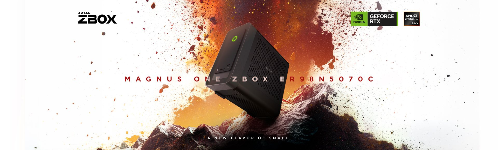
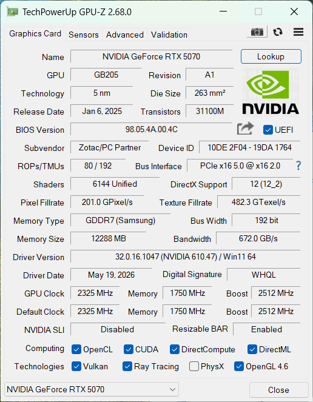
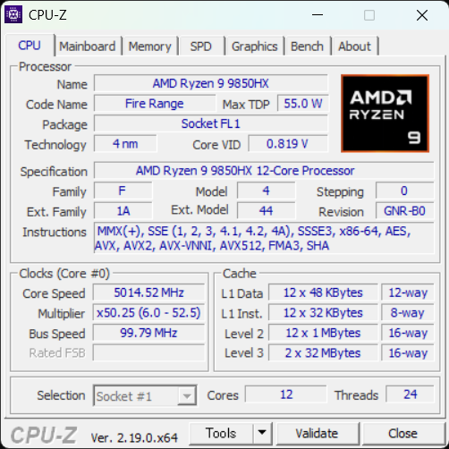
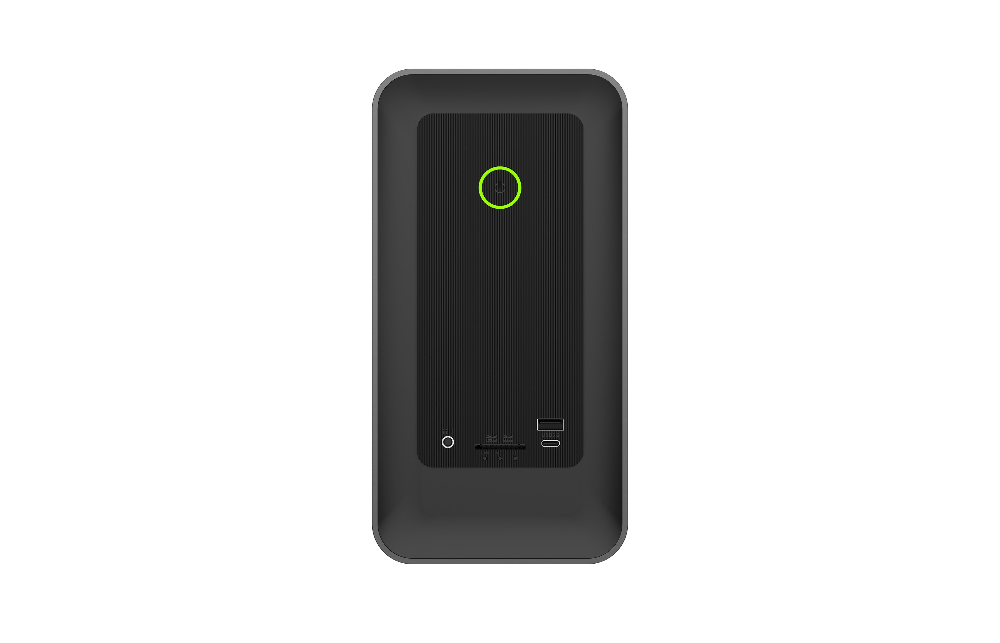
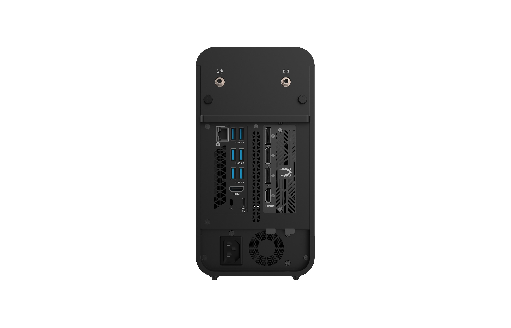
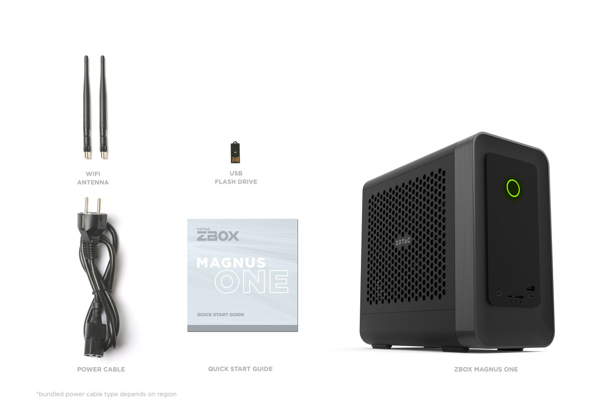

ZBOX MAGNUS ONE ER98N5070CRyzen 9 9850HX × RTX 5070、24スレッドのAMD構成
GeForce RTX 5070 12GB と Ryzen 9 9850HX（12コア24スレッド）を小型筐体に収めたミニPC「ZBOX MAGNUS ONE ER98N5070C」。 3DMarkによるグラフィックス性能、GPUレンダリング、AI画像生成、CPU性能、写真編集まで、社内計測のベンチマークから 同じ MAGNUS ONE の Intel版 5070（EU275070C）との違い、RTX 5060 Ti との立ち位置、そして 複数回計測でのばらつき（安定性）を、用途選定の参考となるよう中立に読み解きます。

実測サマリー（3行）
- 3DMark で RTX 5060 Ti を約35〜45%（Blender は約36%、Cinebench GPU は約20%）上回り、比較した MAGNUS 系で RTX 5080・5070 Ti・Intel版に次ぐ位置（Speed Way 5,769 / Steel Nomad 5,251 / Time Spy Extreme 10,365）。GPUは Intel版 5070（EU275070C）と同一・互角。
- Ryzen 9 9850HX は 12コア24スレッド。Procyon Photo 9,882 は比較した中でトップ（Intel版・5060 Ti を上回る）。CPU／iGPU 混在ワークロードで強み。
- ただし Cinebench CPU は 5,286 pts・複数回計測でのばらつき cv 8.09%とやや大きめ（計測の再現性を最優先するなら Intel版 265＝cv 0.17%）。AI＝ComfyUI 9.09 秒/枚、VRAM は 12GB。テスト構成: メモリ32GB・電源プラン＝高パフォーマンス。
小型筐体に「デスクトップGPU＋AMD 24スレッドCPU」を収めた MAGNUS ONE
ZBOX MAGNUS ONE ER98N5070C は、ZOTAC のミニPC「ZBOX MAGNUS ONE」シリーズのうち、GeForce RTX 5070 12GB（Blackwell 世代 / DLSS 4）と AMD Ryzen 9 9850HX（12コア24スレッド）を組み合わせた AMD 構成モデルです。 GPU は PCIe 5.0 x16 のデスクトップ RTX 5070 で、同じ MAGNUS ONE の Intel版（EU275070C）と同一です。 両者の違いは、CPU が AMD の Ryzen 9 9850HX（本機・Fire Range）か Intel の Core Ultra 7 265（EU275070C）か、の一点です。
本機はベアボーン構成で、メモリ・ストレージは導入側で選定できます（本レビューのテスト機は 32GB DDR5-5600 ＋ NVMe SSD）。 AMD プラットフォームを標準にしている環境や、Ryzen 指定の案件で RTX 5070 級のGPUを使いたい場合に導入しやすい構成です。 筐体は 8.48L（270.5 × 126 × 249 mm）で、500W 80+ Platinum 電源を内蔵（外部ACアダプター不要）。デスクトップ版 GeForce RTX 5070 を搭載するミニPCとしては世界最小クラスの高性能機で、一般的なミニPC（NUC型など）より一回り大きいものの、単体（デスクトップ）GPUを積めるミニPCの最上位クラスにあたります。
GPUGeForce RTX 5070 とは
NVIDIA の Blackwell 世代（RTX 50 シリーズ）のデスクトップ向けGPU。本機の搭載モデルは VRAM 12GB（GDDR7 / 192-bit）。前世代から、より高速な GDDR7 メモリ、フレーム生成を強化した DLSS 4、新世代のレイトレ／AI（Tensor）ユニットへ更新された世代です。
ポイントゲームに加えてローカルでのAI画像生成・推論の需要が広がり、描画性能だけでなく VRAM容量（扱えるモデル規模・解像度）が重視されるようになっています。RTX 5070 は、ゲーム・GPUレンダ・ローカルAIを1台でこなせるミドルハイ帯のGPUです。
CPURyzen 9 9850HX とは
AMD の Zen 5 世代をベースにしたハイエンド・モバイル向けCPU（コードネーム Fire Range）。12コア / 24スレッド（SMT対応）で、本機ではこれを小型筐体に搭載。RDNA系の統合GPU（iGPU）も内蔵します。
ポイント中身はデスクトップ版 Ryzen 9000（Zen 5）と同系のコア。ソケット式のデスクトップ版に対し、末尾 HX は基板直付けのモバイル向けパッケージで、省電力・小型化に最適化された系統です。これを使うことで、多コア・多スレッドをミニPCに持ち込めます（クリエイティブ処理やAIの前処理など並列ワークロード向き）。
実機のハードウェア確認（GPU-Z / CPU-Z）
テスト機の構成を GPU-Z・CPU-Z のメイン画面で確認します。GPU は ZOTAC GAMING GeForce RTX 5070（12GB GDDR7 / 192-bit / GB205 / Blackwell）、CPU は AMD Ryzen 9 9850HX（12コア24スレッド / Fire Range）。 GPU-Z 読みで Boost 2,512MHz・PCIe 5.0 x16・Resizable BAR 有効、CPU-Z 読みで 12コア24スレッド・最大 5.0GHz 超と、いずれもカタログ仕様どおりの個体です（GPUは Intel版 EU275070C と同一スペック）。


テスト環境・比較機材・計測方法
テスト構成（実機計測）
| 製品 / SKU | ZOTAC ZBOX MAGNUS ONE ER98N5070C（MAGNUS ONE / Windows） |
|---|---|
| GPU | ZOTAC GAMING GeForce RTX 5070 12GB（GDDR7・192bit / Blackwell / GB205） |
| GPUドライバー | NVIDIA GeForce 610.47（WHQL）／ Boost 2,512MHz・PCIe x16 5.0 は GPU-Z（§01）参照 |
| CPU | AMD Ryzen 9 9850HX（12C / 24T・Fire Range / 4nm） |
| メモリ（テスト構成） | 32GB DDR5-5600（16GB×2） |
| ストレージ | NVMe SSD（Netac 1TB ほか） |
| OS | Windows 11 Home 25H2（Build 26200） |
| 電源プラン | 高パフォーマンス |
| 計測日 | 2026-06-19 |
製品仕様（カタログ / ER98N5070C）
| グラフィックス | ZOTAC GAMING GeForce RTX 5070 12GB GDDR7 / 192-bit / Blackwell / DLSS 4（PCIe 5.0 x16） |
|---|---|
| プロセッサー | AMD Ryzen 9 9850HX 12コア / 24スレッド / 3.0–5.2GHz / Fire Range / 4nm |
| メモリー | 2 × DDR5-5600 SO-DIMM（最大96GB） |
| ストレージ | 2 × M.2 NVMe PCIe 5.0 ×4（RAID 0 / 1 対応） |
| 映像出力 | 3 × DisplayPort 2.1b（UHBR20）＋ 1 × HDMI（GPU側4系統）／ iGPU側を併用して最大4画面クローン・6画面拡張 |
| ネットワーク | 5GbE Ethernet ／ Wi-Fi 7（802.11be）/ Bluetooth 5.4 |
| 前面 I/O | UHS-II 3-in-1 カードリーダー ／ 2 × USB 3.2 Gen2（10Gbps・1 × Type-C） |
| 背面 I/O | 4 × USB 3.2 Gen2 Type-A ／ 2 × USB 3.2 Gen1 Type-A（USB-C ALT Mode）／ デュアル Wi-Fi アンテナ |
| 電源 | 500W 80+ Platinum PSU 内蔵 |
| 外形・容積 | 270.5 × 126 × 249 mm（8.48L）／ ツールレスアクセス |
| 対応OS | Windows 11 |
製品カタログで全仕様を見る（ZBOX MAGNUS ONE ER98N5070C）→ZOTAC 直販ストア →
比較機材（すべて ZBOX MAGNUS 系）
公平性のため、比較は同じ ZBOX MAGNUS 系の実機に限定しています。上位の参考として RTX 5080（EU275080C）・RTX 5070 Ti（EU27507TC） を併載し、同じ RTX 5070 が 本機（AMD）と Intel版の2台、RTX 4070 も Desktop（ERP74070C）と Laptop（EN374070C）の2台あるため、表記は GPU＋CPUで区別します。各機は出荷時の代表構成で計測しました。
| 本記事の表記 | モデル | SKU | CPU |
|---|---|---|---|
| RTX 5080 | MAGNUS ONE ULTRA | EU275080C | Core Ultra 7 265 |
| RTX 5070 Ti | MAGNUS ONE | EU27507TC | Core Ultra 7 265 |
| RTX 5070（本機 / AMD） | MAGNUS ONE | ER98N5070C | Ryzen 9 9850HX |
| RTX 5070（Intel） | MAGNUS ONE | EU275070C | Core Ultra 7 265 |
| RTX 5060 Ti | MAGNUS EN | EN275060TC | Core Ultra 7 255HX |
| RTX 4070 Desktop | MAGNUS ONE（前世代） | ERP74070C | Core i7-13700 |
| RTX 4070 Laptop | MAGNUS EN（前世代） | EN374070C | Core i7-13700HX |
MAGNUS ラインナップでの位置づけ
3DMark（グラフィックス性能） — 5060 Ti を約4割引き離し、Intel版と互角
DX12 Ultimate／レイトレを含む 3DMark の3テストでは、本機 RTX 5070 は同じ MAGNUS 系の RTX 5060 Ti を Speed Way +40%・Steel Nomad +45%・Time Spy Extreme +35% と明確に上回りました。 GPU が同一の Intel版 5070（EU275070C）とはほぼ同等（いずれも数%以内）で、GPUが同じであることがそのまま表れています。 比較した MAGNUS 系のなかでは RTX 5080・5070 Ti・Intel版に次ぐ位置で、ミドルハイGPUとして期待どおりの性能です。 複数回計測での変動はいずれも cv 1%未満と安定しています。
GPUレンダリング — Intel版と並ぶ上位クラス
GPU レンダリングでも上位クラスのスコアを記録しました。Cinebench 2026 GPU は 73,744 pts で RTX 5060 Ti（61,312）を約20%上回り、Intel版 5070（74,746）とはほぼ同水準。 Blender Benchmark（OptiX）は 5,899 と、同じ RTX 5070 では Intel版（6,010）に次ぐ2位でした（5070 Ti の 7,666・RTX 5080 の 9,329 を含めると4位）。 いずれも GPU が同一の Intel版とほぼ同水準で、RTX 5080・5070 Ti に次ぐ位置です。
ローカル画像生成AI（Stable Diffusion）— Intel版と同水準、VRAMは12GB
画像生成AI「Stable Diffusion（SDXL）」を ComfyUI で実測すると、本機 RTX 5070 は 1024×1024 / 30ステップで 9.09 秒/枚、 Hires.Fix（1024→1536）で 28.76 秒/枚を記録。RTX 5060 Ti（12.08 / 38.52 秒/枚）より約25%高速で、GPU が同一の Intel版 5070（9.05 / 28.29）とはほぼ同じです。
注意したいのは VRAM 容量です。本機の RTX 5070 は 12GB（192-bit GDDR7）で、生成速度では 5060 Ti を上回りますが、容量では 16GB の 5060 Ti を下回ります。 モデルのロードや、本レビュー未検証の高解像度・大バッチで VRAM 容量がボトルネックになる用途では、速度の速い本機より 16GB の 5060 Ti が有利になる場面があります。速度重視なら 5070、容量重視なら 16GB の 5060 Ti、という分かりやすいトレードオフです。
CPU性能と安定性 — 12コア24スレッド、ばらつきはやや大きめ
Ryzen 9 9850HX（12コア24スレッド）は Cinebench 2026 CPU で 5,286 pts。 スレッド数は Intel版（Core Ultra 7 265 / 20スレッド）より多く、Cinebench スコアでは前世代EN機の Core i7-13700HX（3,645 pts）を約45%上回ります。 Procyon PhotoなどのCPU／iGPU混在ワークロードで比較した中でトップを取るなど、高スレッド数の強みが出ています。
一方で注意したいのは複数回計測でのばらつきです。本機の Cinebench CPU は cv 8.09%（3回計測で 5,965／5,135／5,286 と振れる）。 同じ RTX 5070 の Intel版（Core Ultra 7 265 / 5,760 pts・cv 0.17%）や、RTX 5060 Ti の Core Ultra 7 255HX（cv 2.58%）より変動が大きく、計測の再現性を最優先する用途では Intel版が有利です。 GPU は同一のため、用途に応じて「マルチスレッド・AMD標準環境なら本機／再現性重視なら Intel版」と選び分けるのが妥当です。
※ Cinebench CPU の複数回計測でのばらつき（cv：変動係数 = 標準偏差÷平均×100%）: 本機 Ryzen 9 9850HX = 8.09% ／ Core Ultra 7 265（Intel 5070）= 0.17% ／ Core Ultra 7 255HX = 2.58% ／ Core i7-13700HX = 5.48%。値はいずれも3回計測の中央値。
写真編集・オフィス（Procyon）— Photo は比較した中でトップ
UL Procyon の写真編集（Photoshop＋Lightroom Classic）で 9,882（比較した中でトップ）、 オフィス（Essentials）で 4,766。Photo は Intel版 5070（9,195）や 5060 Ti（8,678）を上回りました。 Photo は GPU 単体ではなく CPU／メモリ／iGPU を含む複合ワークロードで、24スレッドの Ryzen 9 9850HX の強みが表れた結果といえます。
複数回計測でのばらつき（再現性・安定性）
本プロジェクトが重視する 安定性指標。複数回計測を実施したテストの変動係数（cv：標準偏差÷平均×100%）を一覧します。 本機は 3DMark・GPUレンダリングが cv 1%未満と安定している一方、Cinebench CPU は cv 8.09%と振れがあります（3回の計測間で 5,135〜5,965 pts と高低差が出ました）。GPU系の再現性は高く、CPU系の単発計測ではばらつきに留意してください。
| テスト | 中央値 | min–max | cv% | 計測回 |
|---|---|---|---|---|
| Time Spy Extreme | 10,365 | 10,361–10,380 | 0.10 | 3 |
| Speed Way | 5,769 | 5,747–5,794 | 0.41 | 3 |
| Steel Nomad | 5,251 | 5,219–5,252 | 0.36 | 3 |
| Cinebench GPU | 73,744 | 73,086–73,779 | 0.53 | 3 |
| Cinebench CPU | 5,286 | 5,135–5,965 | 8.09 | 3 |
※ Blender・ComfyUI・Procyon Photo / Essentials は本機では1回計測のため cv は非算出。3DMark・Cinebench は3回計測の中央値。
安定性を支える冷却・筐体構造
3DMarkおよびGPUレンダリングの複数回計測での変動が小さい（cv 0.1〜0.5%）ことから、GPU側の温度とクロックは安定して維持できていると考えられます。 分解図のとおり、デスクトップGPUカードを 8.48L の小型筐体に収めるため、天板・側面・底面のハニカムメッシュで吸気面を広く確保し、その内側に GPUカード／マザーボードと 500W 80+ Platinum の内蔵電源を立体的に配置しています。
負荷段階別の実測 — 待機・ゲーム相当・最大負荷
ベンチマーク実行中の GPU を nvidia-smi で1秒間隔で連続記録し、負荷段階ごとに GPU 温度・コアクロック・消費電力・ファン・VRAM を集計しました。小型筐体でも温度とクロックが乱れないかを、実センサー値で確認します。
| 状態 | GPU温度 中央/ピーク | コアクロック | 消費電力 中央/ピーク | ファン | VRAM |
|---|---|---|---|---|---|
| 待機（アイドル） | 約37°C | アイドル | 約15W | 0% | 0.6GB |
| ゲーム相当（3DMark グラフィックス負荷） | 80 / 84°C | 約2,700 MHz | 249 / 253W | 〜100% | 6.4GB |
| 最大負荷（AI連続生成 ComfyUI） | 84 / 86°C | 2,707 MHz | 246 / 253W | 100% | 11.8GB |
注目は 高負荷でもコアクロックが約 2,700 MHz を維持している点です。GPU 温度が 84°C 前後（ピーク 86°C）の高負荷区間でもクロックはほぼ低下せず（84°C 前後の区間で 2,707 MHz、より低温の 75〜79°C の区間でも 2,722 MHz と、温度差によるクロック低下はごくわずか）、消費電力は GPU の電力上限である約250Wでほぼ一定。つまり本機は 熱ではなく電力リミットで頭打ち＝サーマルスロットリングは見られません。8.48L の小型筐体でも、デスクトップ RTX 5070 を温度で絞らず回せていることを示します。最大負荷時は GPU カード側のファン回転率が 100% に達しました（本レビューでは騒音（dB）を計測していないため、動作音の大小は評価していません）。その分クロックを維持しています。
プラットフォームと拡張性
MAGNUS ONE の強みは、小型でありながら PCIe 5.0 x16 のデスクトップGPUカードを収める点にあります（本機でも実機ツールで確認）。 本機の CPU は AMD Ryzen 9 9850HX（Fire Range）で、AMD プラットフォームを標準にしている環境や Ryzen 指定の案件で、RTX 5070 級のGPUを小型筐体で運用できます。
本機の I/O も据置ワークステーション並みに充実しています。前面は UHS-II 3-in-1 カードリーダーと USB 3.2 Gen2（Type-A / Type-C）、背面は USB 3.2 Gen2 Type-A ×4 ＋ USB 3.2 Gen1 ×2（USB-C ALT Mode）、映像は DisplayPort 2.1b（UHBR20）×3 ＋ HDMI（GPU側4系統。iGPU側の出力を併用して最大4画面クローン / 6画面拡張）、ネットワークは 5GbE と Wi-Fi 7。ストレージは M.2 PCIe 5.0 ×2（RAID 0/1 対応）、電源は 500W 80+ Platinum を内蔵します。（Intel版 EU275070C にある Thunderbolt 4・2本目の Gigabit LAN は本機にはありません。）


② 500W 80+ Platinum 電源を内蔵 — 外部ACアダプター不要で取り回しが良い。
③ M.2 PCIe 5.0 ×2（RAID 0/1）＋ 5GbE ＋ Wi-Fi 7 と ④ 4画面出力（DP 2.1b×3＋HDMI）を 8.48L に収める。

想定される用途
ここまでの実測を踏まえ、本機に適した代表的な用途を、計測結果と結びつけて整理します（中立・実測の範囲での想定です）。
AMD プラットフォーム標準の環境
AMD を標準にしている検証・開発環境や、Ryzen 指定の案件で、RTX 5070 級のGPUを小型筐体で導入したい現場に向きます。 GPU は Intel版 5070 と同一の性能で、3DMarkによるグラフィックス性能・GPUレンダリング・AI を十分にこなせます。
マルチスレッド・混在ワークロード
Ryzen 9 9850HX の 24スレッドは、Procyon Photo 9,882（比較した中でトップ）に表れたように、CPU／iGPU を含む複合ワークロードで強みがあります。 写真・映像編集や、多数のスレッドを使うバッチ処理に向きます。
ローカル画像生成AI（SDXL）（オンプレ）
画像生成AI（Stable Diffusion）が ComfyUI SDXL 9.09 秒/枚と上位級の生成速度で、ネットワークに依存しないローカルAIをこのサイズで構築できます。 VRAM は 12GB のため、扱うモデル規模・解像度・バッチが容量に収まる範囲では本機が速く、容量がボトルネックになる大規模用途では 16GB の 5060 Ti も併せて検討すると選定が安定します。
まとめ — どんな現場に向くか
ZBOX MAGNUS ONE ER98N5070C は、AMD プラットフォームで RTX 5070 級のGPUと 12コア24スレッドCPU を小型筐体に収めたい現場に向く一台です。 GPU は Intel版 5070（EU275070C）と同一で、3DMarkによるグラフィックス性能・GPUレンダリング・AI はほぼ同等。Procyon Photo では比較した中でトップを取り、CPU／iGPU 混在ワークロードに強みがあります。 一方、Cinebench CPU の複数回計測でのばらつき（cv 8.09%）は Intel版（cv 0.17%）より大きいため、計測の再現性を最優先するなら Intel版（EU275070C）が候補になります。 AMD 標準環境・マルチスレッド用途なら本機、再現性重視なら Intel版、という選び分けが分かりやすい構図です。
適所マップ
向く
- AMD プラットフォーム標準・Ryzen 指定の環境
- 24スレッドを活かすマルチスレッド／混在ワークロード
- 写真・映像編集（Procyon Photo 比較した中でトップ）
- オンプレのローカル画像生成AI（SDXL）（速度重視）
他候補が向く
- 計測の再現性・CPU安定性を最優先 → Intel版 RTX 5070（EU275070C）
- AI で VRAM 容量最優先 → 16GB の RTX 5060 Ti（MAGNUS EN）
付録: 全ベンチマーク結果
本記事チャートの元数値を一覧にまとめます（すべて 中央値。計測条件は §02、各機の識別も §02 の比較表を参照）。比較はすべて ZBOX MAGNUS 系。
| テスト | RTX 5080EU275080CCore Ultra 7 265 | RTX 5070 TiEU27507TCCore Ultra 7 265 | RTX 5070（本機）ER98N5070CRyzen 9 9850HX | RTX 5070（Intel）EU275070CCore Ultra 7 265 | RTX 5060 TiEN275060TCCore Ultra 7 255HX | RTX 4070 DesktopERP74070CCore i7-13700 | RTX 4070 LaptopEN374070CCore i7-13700HX |
|---|---|---|---|---|---|---|---|
| Time Spy Extremescore・高いほど良い | 14,859 | 12,501 | 10,365 | 10,562 | 7,674 | 7,833 | 5,527 |
| 3DMark Speed Wayscore・高いほど良い | 8,989 | 7,474 | 5,769 | 5,827 | 4,119 | 4,498 | 2,951 |
| 3DMark Steel Nomadscore・高いほど良い | 8,588 | 6,634 | 5,251 | 5,283 | 3,620 | 3,999 | 2,662 |
| Cinebench 2026 GPUpts・高いほど良い | 109,086 | 94,543 | 73,744 | 74,746 | 61,312 | 68,598 | 45,669 |
| Blender Benchmark (OptiX)score・高いほど良い | 9,329 | 7,666 | 5,899 | 6,010 | 4,327 | 5,320 | 3,608 |
| Cinebench 2026 CPUpts・高いほど良い | 5,980 | 5,825 | 5,286 | 5,760 | 5,618 | 4,024 | 3,645 |
| ComfyUI SDXL (1024)秒/枚・短いほど良い | 6.04 | 7.07 | 9.09 | 9.05 | 12.08 | 10.08 | 15.15 |
| ComfyUI SDXL Hires秒/枚・短いほど良い | 18.10 | 21.97 | 28.76 | 28.29 | 38.52 | 31.32 | 47.89 |
| Procyon Photo Editingscore・高いほど良い | 9,088 | 8,922 | 9,882 | 9,195 | 8,678 | 8,771 | 6,404 |
| Procyon Office (Essentials)score・高いほど良い | 4,994 | 4,907 | 4,766 | 4,884 | 4,430 | 4,685 | 3,728 |
凡例: 値は3回計測（本機の Blender / ComfyUI / Procyon は1回）の中央値。FAIL=実行したが無効。ComfyUI のみ「秒/枚（短いほど良い）」。